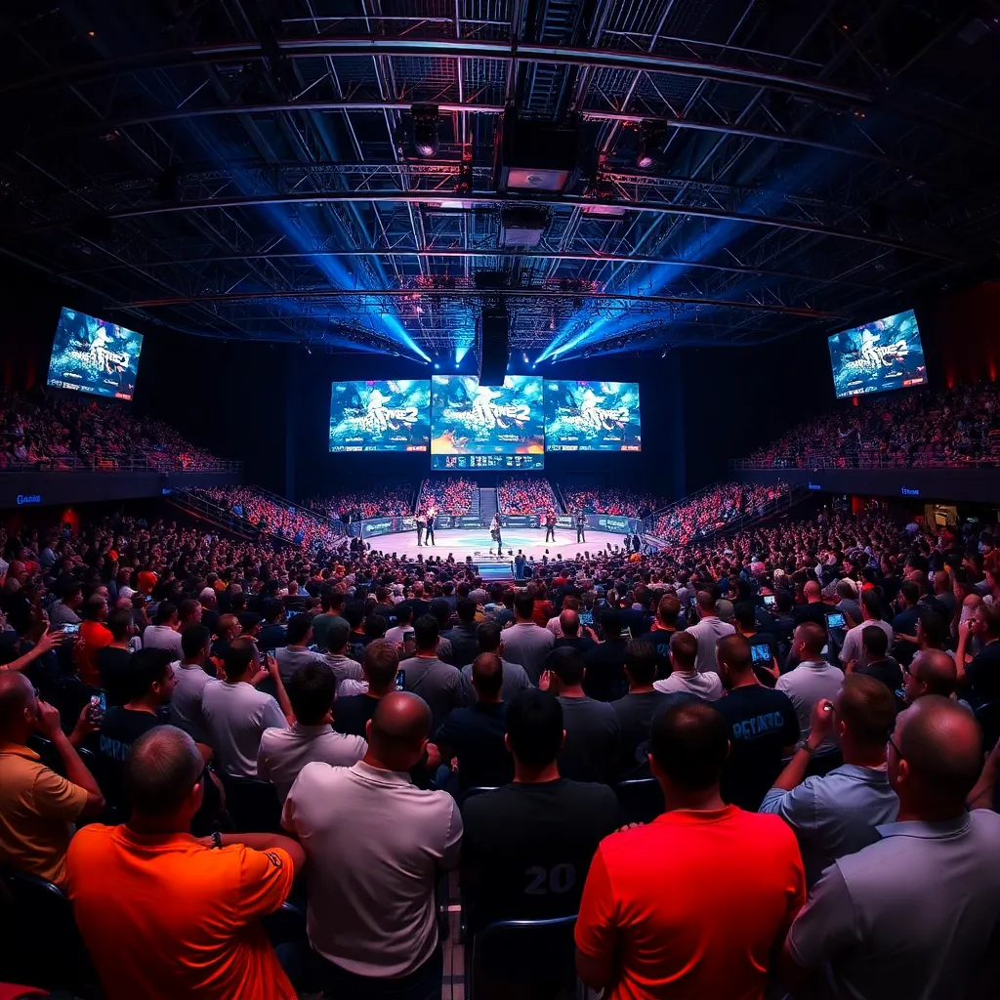
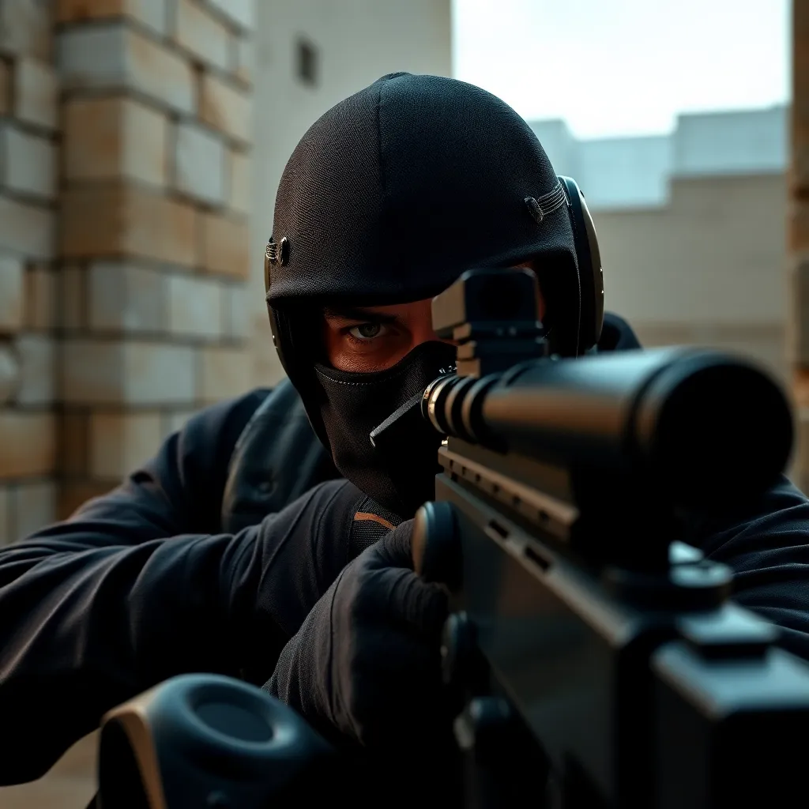

Counter Strike-2
Introduction
Counter-Strike 2, developed by Valve Corporation, is the next evolution in the legendary Counter-Strike
franchise. It offers enhanced graphics, revamped gameplay mechanics, and deeper immersion while preserving the
core tactical shooter experience that has captivated millions worldwide.
Gameplay
Counter-Strike 2 retains the classic team-based objectives: Terrorists and Counter-Terrorists compete to
plant/defuse bombs or rescue hostages. Players rely on skillful aiming, precise movement, and strategic
teamwork. The new engine brings smoother animations and responsive controls, elevating the tactical experience.
New Features
- Source 2 Engine: Cutting-edge graphics with realistic lighting, shadows, and particle effects.
- Revamped Hit Registration: Enhanced precision ensuring fair and responsive gunplay.
- Interactive Maps: Dynamic environmental elements that influence strategies and gameplay.
- Expanded Arsenal: New weapons and equipment customization options for varied tactics.
- Improved Matchmaking & Anti-Cheat: Smarter matchmaking and robust security to provide a competitive yet
fair environment.
Competitive Scene
Counter-Strike 2 is poised to continue the franchise's prestigious esports legacy, providing a platform for
thrilling professional competitions worldwide. Major tournaments like Majors and global leagues will showcase
high-level tactics, teamwork, and mechanical skill, attracting millions of viewers and fans.

Gallery

Counter-Strike 2 — The Future of Tactical Shooting © 2025